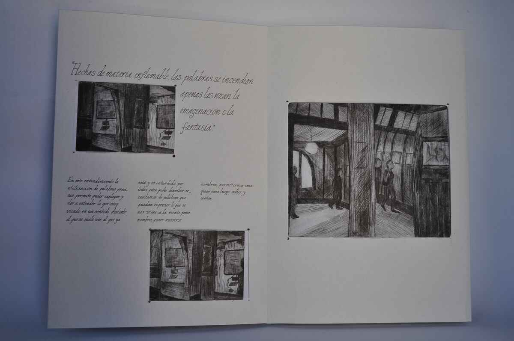
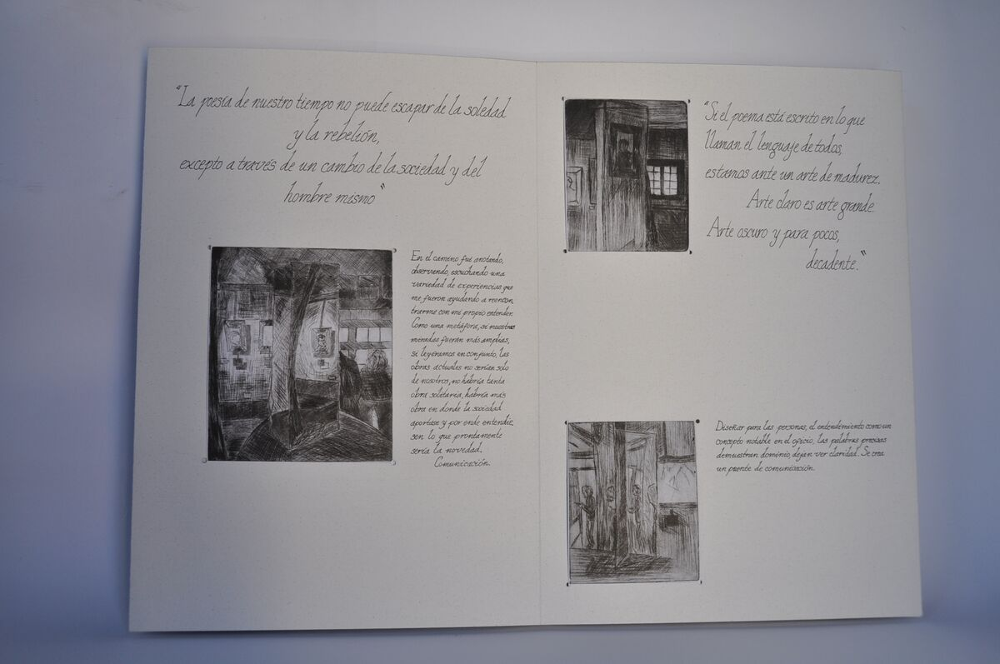
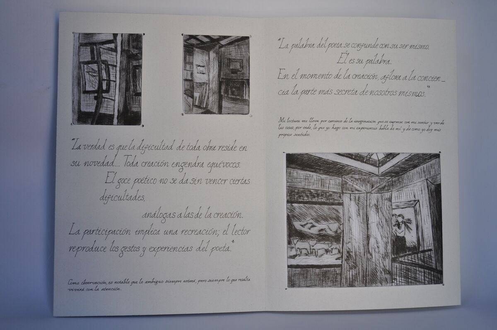
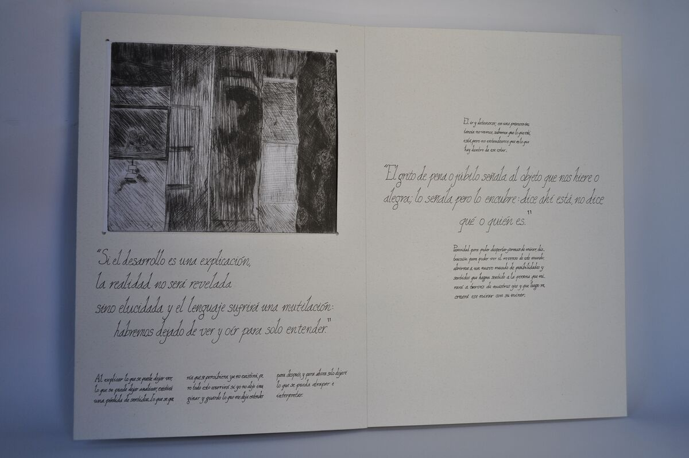

LO QUE ESTÁ EN MI LECTURA
Y LO QUE MIRARÁS EN MI MIRAR
Proyecto Taller Del Hacer Visible 2023




¿De qué trata?
El proyecto reúne todo el estudio realizado a lo largo del taller. A partir del proceso de construcción de caligrafías propias, se desarrolló una serie de grabados inspirados en el Museo Baburizza, visitado durante uno de los ciclos del curso. La materia central del taller se enfocó en hacer aparecer la luminosidad desde las sombras, explorando cómo esta relación puede trasladarse también a la composición de las páginas, donde la geometría y la luz se entrelazan.
Como parte del proceso reflexivo, el trabajo se vincula con El arco y la lira de Octavio Paz, texto que permitió profundizar en las conexiones entre la creación artística, la palabra y la experiencia poética.